기계가공기능장 (2003-07-20 기출문제)
1과목: 임의 구분
1. 유체의 에너지를 사용하여 기계적 일을 하는 부분은?
- 유압 액추에이터
- 유압밸브
- 유압탱크
- 오일 미스트
(정답률: 87%)

2. 공기압 실린더의 주요 구성품이 아닌 것은?
- 실린더튜브
- 피스톤로드
- 피스톤
- 스풀
(정답률: 77%)
3. 대기압을 0 으로 하여 측정한 압력은?
- 표준압력
- 양정압력
- 절대압력
- 게이지압력
(정답률: 62%)
4. 2개의 복동 실린더로 구성되어 있으며 단계적 출력제어가 가능한 실린더는?
- 충격실린더
- 램형실린더
- 탠덤실린더
- 다위치형 실린더
(정답률: 74%)
5. 다음의 그림은 공유합 회로도이다. 이중 플립플롭(Flip-Flop)회로는?
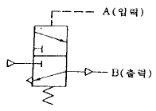
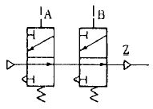
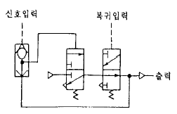
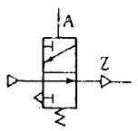
(정답률: 66%)
6. 지그(Jig)를 구성하는 요소가 아닌 것은?
- 공작물의 위치 결정구
- 각종 공구 및 게이지
- 공작물의 클램핑 기구
- 공구의 안내 및 위치 결정구
(정답률: 82%)
7. 중공(中空)제품의 축선을 센터링(centering)시키는 데 가장 적합한 것은?
- V블록
- 콜릿(collet)
- 원추로케이터
- 단동척
(정답률: 50%)
8. 지그 부시에 대해 설명 중 틀린 것은?
- 드릴 지그는 거의 전부가 위치결정이나 센터내기를 하는데 사용된다.
- 지그 부시는 내마멸성이 좋은 재료를 사용한다.
- 일반적으로 지그판은 주로 경강을 사용하여야 한다.
- 부시는 고정식과 끼워 맞춤식이 있다.
(정답률: 40%)
9. 클램프를 설계할 때 고려해야 할 사항이 아닌 것은?
- 절삭력에 충분히 견딜수 있어야 한다.
- 공작물을 장착, 장탈하는데 지장이 없어야 한다.
- 마모가 심한 부분은 열처리 등을 한다.
- 절삭력의 방향과 반대방향으로 힘이 가해져야 한다.
(정답률: 82%)
10. 칩 배출이 가장 용이한 지그는?
- 바깥지름 지그(Diameter Jig)
- 개방 지그(Open Jig)
- 리프 지그(Leaf Jig)
- 상자형 지그(Box Jig)
(정답률: 73%)
11. 기초원 지름 242mm, 잇수 50인 스퍼기어의 법선 피치를 구하면 몇 약mm인가?
- 9.997
- 15.2⑤
- 29.976
- 33.209
(정답률: 39%)
12. 다이얼 인디케이터는 어디에 측정치가 나타나는 게이지 인가?
- 허브와 딤블
- 철자
- 바늘이 있는 눈금판
- 캘리퍼스
(정답률: 95%)
13. 표면거칠기를 측정하는 방법으로 가장 옳지 않은 것은?
- 표면거칠기 기준편과 비교하는 방법
- 촉침법
- 광선 반사법
- 광택법
(정답률: 74%)
14. 사인바(sine bar)에 의한 각도측정시 45° 이상의 각도 측정에서 큰 오차가 발생되는 이유로 가장 타당한 것은?
- 오차함수가 탄젠트 함수로 되므로 45° 이상에서는 심한 오차가 발생하기 때문이다.
- 측정시 사인바를 설치할 때 자세에 의한 오차가 발생하기 때문이다.
- 사인바의 롤러 중심거리가 짧으므로 45° 이상에서 균형이 맞지않기 때문이다.
- 사인바의 측정면의 정밀도가 45° 이상에서 저하되기 때문이다.
(정답률: 73%)
15. 한계 게이지의 마멸 여유는 일반적으로 어느 쪽에 주는가?
- 정지측에 준다.
- 통과측에 준다.
- 양쪽에 다 준다.
- 양쪽에 모두 주지 않는다.
(정답률: 67%)
16. 다음 중 3차원의 기하학적 형상 모델링이 아닌 것은?
- 와이어 모델링
- 서피스 모델링
- 시스템 모델링
- 솔리드 모델링
(정답률: 58%)
17. 서보기구의 제어회로 방식 중 가격이 고가이고, 고정밀도가 요구될 때 사용하는 것은?
- 개방회로방식
- 복합회로 서보방식
- 폐쇄회로방식
- 반폐쇄회로방식
(정답률: 69%)
18. G45 보정이 -12.000 일때 사실상의 보정량이 2.000 이면 이동량은?
- 8.000
- 10.000
- 12.000
- 14.000
(정답률: 42%)
19. 2차원 변환행렬이 다음과 같을 때 좌표변환은?
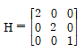
- 확대
- 회전
- 대칭
- 이동
(정답률: 34%)
20. CNC 밀링에서 ø20mm인 엔드밀로 GC25를 가공하고자 할 때 주축의 회전수는 몇 rpm인가? (단, 절삭속도는 100 m/min 이다.)
- 890
- 1090
- 1390
- 1592
(정답률: 73%)
2과목: 임의 구분
21. 다음중 펌프에서 소음이 나는 원인과 가장 관계가 없는 것은?
- 펌프에서 흡입불량
- 에어필터 막힘
- 이물질의 침입
- 작동압력이 높음
(정답률: 69%)
22. 다음 중 공장자동화 생산시스템에 필요한 기술 중 맞지 않는 것은?
- Computer Aided Design(CAD)
- Computer Aided Manufacturing(CAM)
- Flexible Manufacturing System(FMS)
- Quality Innovation(QI)
(정답률: 82%)
23. 다음 중 LAN의 통신 프로토콜과 가장 거리가 먼 것은?
- 토큰패스
- 토큰 링
- CSMA/CD
- IEEE-488
(정답률: 44%)
24. 다음 중 홀센서에 대하여 가장 올바르게 설명한 것은?
- 자장을 가하면 자장에 비례한 전압이 발생한다.
- 자장을 가하면 자장에 비례한 저항이 변한다.
- 전류가 흐르면 전류에 비례하여 저항이 변한다.
- 전류가 흐르면 전류에 비례하여 자장이 발생한다.
(정답률: 44%)
25. AC Servo 제어기기의 주회로 전원과 제어전원의 투입 및 차단시 투입 순서로서 옳은 것은?
- 주회로 전원을 먼저 투입하고, 제어전원을 투입한다.
- 제어전원을 먼저 차단하고, 주회로 전원을 차단한다.
- 어느 회로가 먼저 투입, 차단이 되든 관계가 없다.
- 제어전원을 먼저 투입한 후 주회로 전원을 투입한다.
(정답률: 31%)
26. 다음 유사한 보조기능(M기능)중 기능이 다른 것은?
- M00
- M02
- M09
- M30
(정답률: 58%)
27. NC 공작기계의 제어에 사용되는 코드에서 주로 ON/OFF기능을 행하는 기능을 무엇이라고 하는가?
- 주축기능
- 이송기능
- 준비기능
- 보조기능
(정답률: 53%)
28. NC기계에서 수동으로 데이터(data)를 입력하여 가공하는 방법은 어느 것인가?
- JOG
- FMS
- MDI
- TAPE
(정답률: 80%)
29. NC 서보(servo)기구에 대한 설명 중 가장 올바른 것은?
- 사람의 손발에 해당하는 부분으로서 공작기계의 테이블 등을 움직이는 역할을 한다.
- 사람의 두뇌에 해당하는 부분으로서 정보처리 회로를 말한다.
- 기계에 명령을 전달하여 주는 기능을 하는 기구를 일컫는다.
- NC의 관건은 정보처리 회로로서 이를 서보 기구라 한다.
(정답률: 48%)
30. 다음 중에서 방전가공기의 특징을 설명한 것으로 잘못된 것은?
- 고경도, 고강도의 재료를 비교적 쉽게 가공할 수 있다.
- 내마멸성, 내부식성이 높은 가공면을 얻을 수 있다.
- 복잡한 형상의 구멍을 비교적 쉽고, 정확히 가공할 수 있다.
- 전기전도도에 관계없이 모든 재료를 가공할 수 있다.
(정답률: 63%)
31. 방전가공할 때 전극 재질로 사용되지 않는 것은?
- 구리(Cu)
- 아연(Zn)
- 텅스텐(W)
- 은(Ag)
(정답률: 30%)
32. 바이트의 재질이 초경공구인 것을 연삭하려한다. 다음 연삭 숫돌 중 어느 것을 사용하는 것이 가장 적당한가?
- WA숫돌
- GC숫돌
- WG숫돌
- AC숫돌
(정답률: 73%)
33. 센터리스 연삭기의 장점 중 틀린 것은?
- 연속 작업을 할 수 있어 대량 생산에 적합하다.
- 긴 축 재료의 연삭이 가능하다.
- 연삭숫돌 바퀴의 나비보다 긴 일감도 전후 이송법으로 연삭할 수 있다.
- 연삭 여유가 적어도 된다.
(정답률: 74%)
34. 다음 중 밀링머신에서 원판의 외경가공, 윤곽가공 및 간단한 분할작업을 할 수 있는 부속장치는?
- 직접 밀링장치
- 만능 바이스
- 슬로팅장치
- 회전테이블
(정답률: 64%)
35. 커터의 지름이 100mm, 절삭날수 18개인 초경합금 밀링커터로 길이 400mm의 일감에 홈을 가공하려 한다. 날 1개 이송을 0.1mm로 하여 1회에 완성한다면 가공 소요시간은? (단, 절삭속도는 50m/min이다)
- 약 12.3분
- 약 6.39분
- 약 3.39분
- 약 1.39분
(정답률: 38%)
36. 선반의 주축 끝에 척이나 면판을 부착하는 방법이 아닌 것은 어느 것인가?
- 플랜지식
- 캠록식
- 나사식
- 베어링식
(정답률: 66%)
37. 선반 중에서 각종 공구를 많이 고정하고 작업하는 선반은?
- 수직선반(Vertical Lathe)
- 공구선반(Tool Lathe)
- 탁상선반(Bench Lathe)
- 터릿선반(Turret Lathe)
(정답률: 80%)
38. 지름을 변화시킬 수 있는 심봉(Mandrel)은?
- 갱 맨드릴
- 표준 맨드릴
- 조립식 맨드릴
- 팽창식 맨드릴
(정답률: 75%)
39. 공구수명에 가장 큰 영향을 주는 것은?
- 절삭속도
- 절삭깊이
- 이송
- 공구각
(정답률: 86%)
40. 빌트 업 에지(built up edge)란 무엇인가?
- 선반공구의 일종
- 공구 끝이 마멸되는 것
- 칩(chip)의 일부가 날끝에 붙는 것
- 조합구성된 바이트 끝
(정답률: 84%)
3과목: 임의 구분
41. 다음은 절삭제의 요구성질이다. 맞지 않은 사항은?
- 냉각작용이 클 것
- 칩의 세척작용이 좋을 것
- 인화점이 낮을 것
- 기계표면을 녹슬지 않게 할 것
(정답률: 86%)
42. 주철을 절삭할 때 일반적인 칩의 형태는?
- 전단형
- 경작형
- 균열형
- 유동형
(정답률: 36%)
43. 정보처리 회로에서 서보기구로 보내는 신호의 형태는?
- 전압
- 전류
- 펄스
- 자기
(정답률: 82%)
44. 일반적으로 공작기계 주축(spindle)의 구비조건 중 적당하지 않는 것은?
- 정밀도
- 강성
- 안정성
- 소성
(정답률: 65%)
45. 압축공기의 사용목적이 안전수칙에 위배되는 것은?
- 이동용 공구에 사용한다.
- 기구의 조작에 사용한다.
- 먼지를 털기 위하여 사람에게 사용한다.
- 먼지를 털기 위하여 기계에 사용한다.
(정답률: 65%)
46. 기계적 고장에는 마모고장과 어떤 고장이 있는가?
- 초기고장
- 장기고장
- 피로고장
- 기능고장
(정답률: 41%)
47. 밀링작업 중 안전사항에 위배되는 것은?
- 일감은 기계가 정지한 상태에서 고정한다.
- 커터에 옷이 감기지 않도록 한다.
- 보안경을 착용한다.
- 절삭 중 측정기로 측정한다.
(정답률: 95%)
48. 프레스용 금형재료의 구비조건 중 옳지 않은 것은?
- 경도 및 인성이 클 것.
- 내마모성이 클 것.
- 열처리시 치수변화가 많을 것.
- 기계가공성이 좋을 것.
(정답률: 88%)
49. 탄소강이 200∼300℃에서 경도가 높고 여린 성질을 갖게 된다. 이러한 성질을 무엇이라고 하는가?
- 냉경메짐
- 청열메짐
- 고경메짐
- 적열메짐
(정답률: 75%)
50. 합금강은 탄소강에 비하여 성질이 개선되는 경우가 많다. 합금원소가 많이 함유될수록 감소되는 개선 내용은?
- 강도
- 경도
- 전기 전도도
- 담금질성
(정답률: 56%)
51. 피로파괴를 일으킬 수 있는 기계요소는 피로시험을 실시하여야 한다. 다음 중에서 피로시험 대상인 기계요소와 거리가 가장 먼 것은?
- 크랭크축
- 스프링
- 벨트풀리
- 구름베어링
(정답률: 61%)
52. Mf∼MS 내의 항온 열처리로 열욕(hot bath)에 담금질하여 그 온도를 항온 유지함으로써 마르텐사이트와 베이나이트로 변화시켜 경도는 그리 떨어지지 않고 충격치가 높은 조직을 얻는 항온 열처리법은?
- 오스템퍼링
- 마르템퍼링
- 풀림
- 심냉처리
(정답률: 15%)
53. 알루미늄의 성질 중 맞지 않는 것은?
- 비중이 가벼운 금속에 속한다.
- 전기 및 열의 전도율이 좋다.
- 공기 중에서 Al2O3의 얇은 막이 생겨 내식성이 좋다.
- 산과 알칼리에 매우 강하다.
(정답률: 69%)
54. 오일리스(Oillless)베어링은 어떻게 만드는가?
- 성형하여 수소기류 중에서 소결한다.
- 절삭가공으로 성형한다.
- 일반적인 주조법으로 성형한다.
- 원심주조법에 의하여 제조한다.
(정답률: 69%)
55. 어떤 측정법으로 동일 시료를 무한 횟수 측정하였을 때 데이터의 분포의 평균치와 참값과의 차를 무엇이라 하는가?
- 신뢰성
- 정확성
- 정밀도
- 오차
(정답률: 59%)
56. 예방보전의 기능에 해당하지 않는 것은?
- 취급되어야 할 대상설비의 결정
- 정비작업에서 점검시기의 결정
- 대상설비 점검개소의 결정
- 대상설비의 외주이용도 결정
(정답률: 73%)
57. 관리한계선을 구하는데 이항분포를 이용하여 관리선을 구하는 관리도는?
- Pn 관리도
- U 관리도
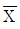
관리도- X 관리도
(정답률: 45%)
58. 로트(Lot)수를 가장 올바르게 정의한 것은?
- 1회 생산수량을 의미한다.
- 일정한 제조회수를 표시하는 개념이다.
- 생산목표량을 기계대수로 나눈 것이다.
- 생산목표량을 공정수로 나눈 것이다.
(정답률: 35%)
59. 다음의 데이터를 보고 편차 제곱합(S)을 구하면? (단, 소숫점 3자리까지 구하시오.)
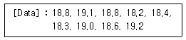
- 0.338
- 1.029
- 0.114
- 1.014
(정답률: 35%)
60. 공정 도시기호중 공정계열의 일부를 생략할 경우에 사용되는 보조 도시기호는?
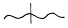
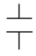
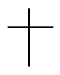
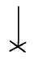
(정답률: 36%)